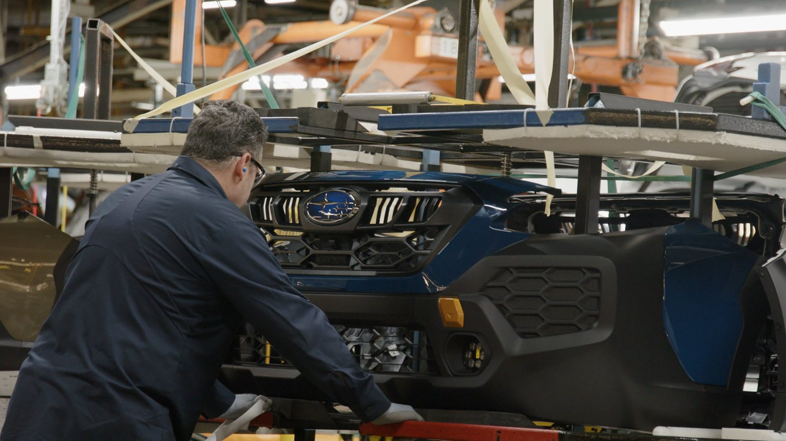
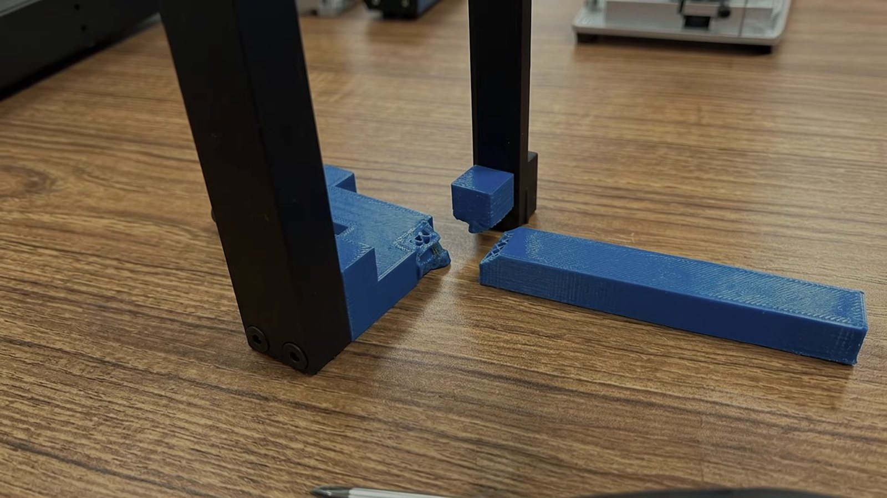
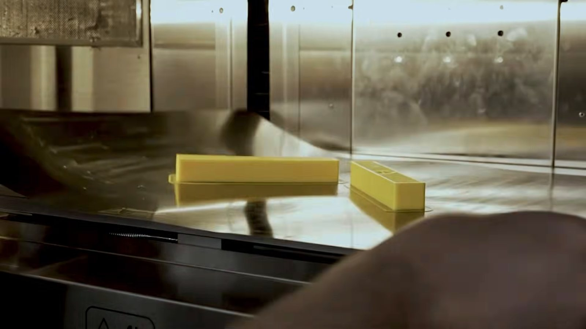
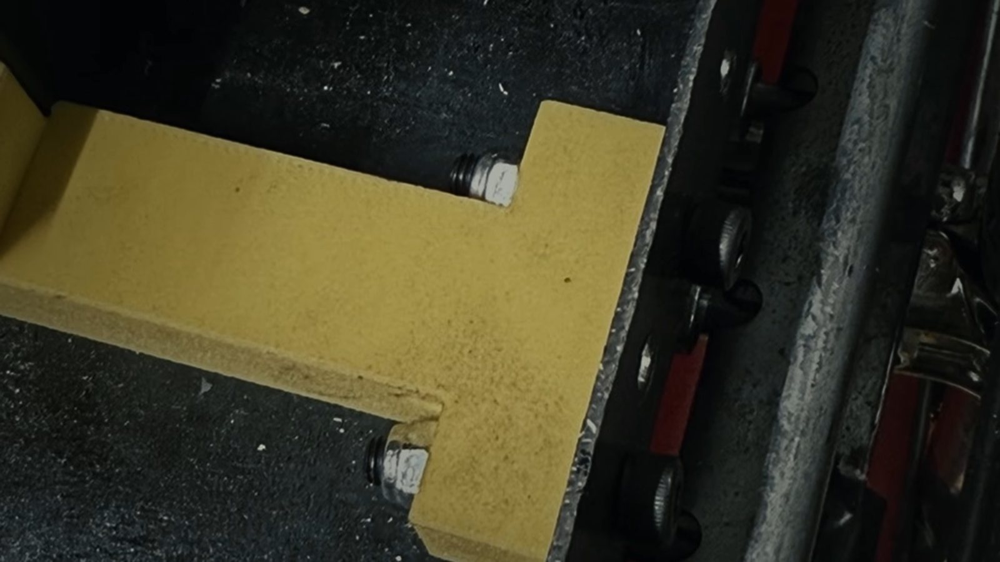

保险杠标签定位夹具
每根保险杠通过涂装车间时，都靠手贴的 QR 标签追踪。保险杠本身没有定位特征，标签贴的位置不一，上方固定扫描器读不到就要停线，人工追踪、重扫、核对完才能复工。SIA 做了一系列以保险杠外形定位的夹具，标签位置精度 0.1 mm；每个车型的前、后保险杠与每个配置各有专属夹具，用 Onyx GF 让每个车型各有一种颜色，一眼就拿对。
标签定位精度 0.1 mm
原厂对橙色的定位很直接：安全夹具、功能性色码，以及外观要好看、又要符合工业标准的对外零件。

橙色加入后，Onyx GF 共有红、黄、绿、蓝、灰、白、橙七色。材料相同，颜色依用途挑。
色块为屏幕示意，实际颜色以线材为准。
实际案例：Subaru 印第安纳厂用 Onyx GF 做色码夹具，每个车型一种颜色。看完整案例与视频 ↓
Subaru 印第安纳工厂（SIA）的装配线同时生产多个车型，不同车型的夹具可能只差几毫米，拿错就要返工、停线。所以 SIA 决定用颜色区分夹具，让操作员一眼挑对。
Markforged 原厂视频，中文字幕由媒体中心翻译，英文字卡为原片内容。



每根保险杠通过涂装车间时，都靠手贴的 QR 标签追踪。保险杠本身没有定位特征，标签贴的位置不一，上方固定扫描器读不到就要停线，人工追踪、重扫、核对完才能复工。SIA 做了一系列以保险杠外形定位的夹具，标签位置精度 0.1 mm；每个车型的前、后保险杠与每个配置各有专属夹具，用 Onyx GF 让每个车型各有一种颜色，一眼就拿对。

搬运凸轮轴盖（cam cap）的托架夹具需要一个底座零件。这个零件原本用 ABS 打印，容易裂开；改用黄色 Onyx GF 打印后，在 ABS 撑不住的地方撑住了，黄色也直接标示它在现场的固定位置。
数据取自 Markforged Onyx GF 材料规格表：FX10 打印、层厚 125 µm、默认实心填充，依 ASTM D618 调湿后于 XY 方向测试。规格表针对 Onyx GF 材料本身，未依颜色分列。
寄一个零件图档，我们评估适不适合用 Onyx GF 打印、要不要加连续纤维，并提供报价。已经有 FX10 或 FX20 的客户，订购橙色线材与硬化塑料喷嘴可以直接发邮件给我们，或联系当地 Markforged 经销合作伙伴。